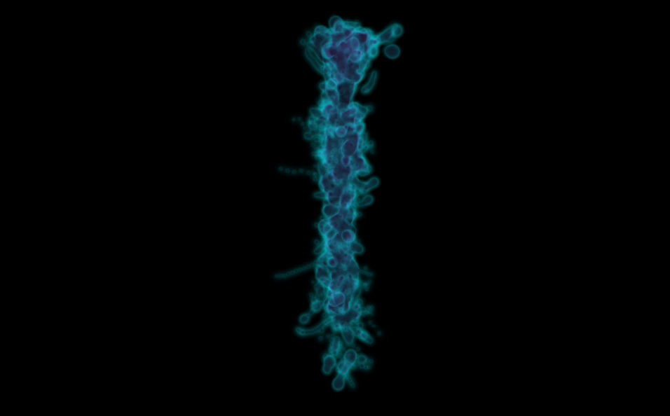
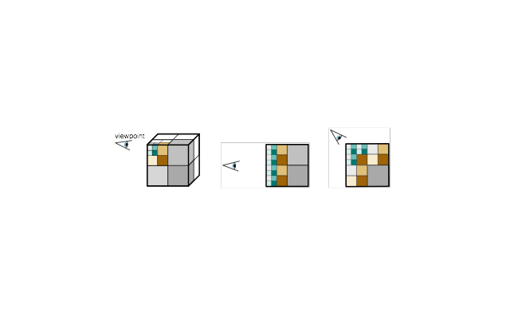

Table of Contents
- Technical Features
- Architecture
- Render thread
- Upload threads
- Compute threads
- Livre library
- References
Technical Features
Livre is an out-of-core rendering engine that has the following features:
- Distributed rendering using Equalizer library (https://github.com/Eyescale/Equalizer) (Sort-first is implemented, sort-last is in progress)
- Octree based out-of-core rendering.
- Visualisation of pre-processed UVF format. (source code) volume data sets.
- Real-time voxelisation of different data sources (surface meshes, BBP morphologies, local-field potentials, etc) through the use of plugins.
- Highly parallel architecture for rendering, data uploading and different computational tasks.

Livre rendering using an external data source
- Multi-node, multi-gpu rendering (currently only sort-first rendering).
- Error-based LOD selection and rendering quality.

View-based LOD selection [2]
- Single-pass GPU Raycasting.
Architecture
Render thread
- Computing the LOD tree according to the viewpoint and sending the request to other threads for the required nodes.
- Rendering the scene with the retrieved/available data.
Upload threads
- Uploading the data to the to CPU memory and GPU memory
- Sending results to the rendering thread.
Compute threads
- Computing the histogram of the visualised data.
Livre library
Livre is composed of 3 main libraries:
- core: Base classes for Cache, Pipeline, Visitors and Rendering.
- Lib: Implementations of Cache classes i.e "Data Cache", "Texture Cache", implementation of the rendering pipeline.
- Eq: Equalizer class implementations, RayCastRenderer.
There are 2 different data sources included in the Livre repository:
- UVF: Supports pre-processed UVF volume data sets.
- memory (livre/Lib/Data/MemoryDataSource): Generates in-memory volume data.
References
- Fogal, Thomas, and Jens Krüger. "Tuvok, an Architecture for Large Scale Volume Rendering." VMV. 2010.
- Suter, Susanne K., et al. "Interactive multiscale tensor reconstruction for multiresolution
volume visualization." Visualization and Computer Graphics, IEEE Transactions on 17.12 (2011): 2135-2143.
 1.8.9.1
1.8.9.1